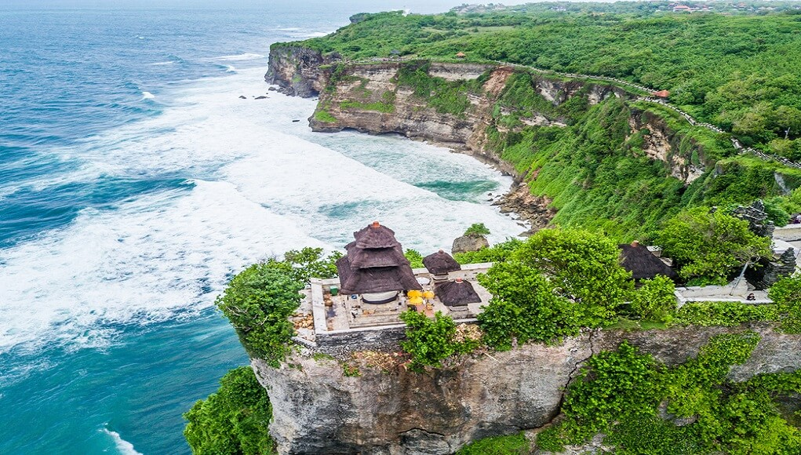

Tempat Wisata Di Bali


Tempat Wisata Di Bali |
|||
|---|---|---|---|
| TANAH LOT | ULUWATU | ||
|
|
Tanah Lot salah satu pura penting bagi umat Hindu Bali dan lokasi pura terletak di atas batu besar yang berada di lepas pantai. Pura Tanah Lot merupakan bagian dari Pura Dang Kahyangan dan juga merupakan pura laut tempat pemujaan Dewa penjaga laut. Tanah Lot berasal dari dua kata yaitu tanah dan laut. Tanah yang diartikan sebagai karang seperti pulau kecil (gili), sedangkan Lot atau lod berarti laut. Tetapi karena suatu pengucapan yang dianggap terlalu panjang dan tidak efektif maka disingkat dengan tanah lot. Jadi Tanah Lot adalah pulau kecil yang terapung di laut dan diatasnya terdapat pura. Apabila air laut pasang, maka pura ini akan dikelilingi oleh air sehingga tampak benar-benar berada di tengah laut. Apabila ingin menjelajahi keindahan pura, ada baiknya untuk datang pada sore hari sebab biasanya air laut sedang surut. Sementara pada pagi hari, air laut kerap kali pasang sehingga wisatawan tidak bisa mencapai pelataran pura. Namun apabila sedang bulan purnama, pada sore hari pun air laut biasanya tetap pasang. |  | Pura Uluwatu Bali, memiliki status sebagai Pura Sad Kahyangan Jagat atau penyangga poros mata angin pulau Bali. Lokasi pura terletak di atas sebuah bukit karang dengan ketinggian sekitar 97 meter di atas permukaan laut. Karena lokasi pura yang berada di atas tebing batu karang, maka pura ini di beri nama Uluwatu, yang dalam bahasa Sanskerta berarti puncak batu karang. Lokasi berdirinya bangunan pura Luhur Uluwatu, membuat wisatawan yang datang berkunjung, tidak hanya dapat menikmati suasana yang sakral dan religius, tetapi juga pemandangan yang indah serta unik. Berbeda dengan pemandangan yang ada di objek wisata pura Tanah Lot, wisatawan yang berwisata ke pura Luhur Uluwatu akan menyaksikan luasnya hamparan Samudra India, dengan ombak yang menghantam kaki tebing. Selain itu, wisatawan juga dapat menikmati indahnya pemandangan matahari terbenam tanpa adanya halangan yang menghalangi pemandangan sunset. |
| NUSA DUA | KUTA | ||
|
|
Nusa Dua Bali salah satu tempat wisata di pulau Bali, yang lokasinya berada di Bukit Peninsula, bagian ujung tenggara pulau Bali. Terbentang dari semenanjung Tanjung Benoa, sampai ke area timur bukit Sawangan. Sedangkan kawasan pariwisata Nusa Dua adalah sebuah wilayah kawasan pariwisata yang lebih terkenal dengan nama ITDC Nusa Dua. Kawasan pariwisata Nusa Dua, salah satu kawasan pariwisata kelas mewah yang ada di pulau Bali dan sangat terkenal ke mancanegara. Berbagai event-event besar kenegaraan yang mendatangkan tamu dari berbagai negara, selalu diselenggarakan di kawasan pariwisata Nusa Dua Bali. Sebagian besar hotel di kawasan pariwisata Nusa Dua Bali adalah hotel mewah bintang lima.Selain taman dan hotel mewah, tempat wisata Nusa Dua juga terkenal dengan pantai pasir putih dan air laut yang tenang. Andaikata pembaca bertanya, dimana pantai terbersih di Bali? Maka pantai di Nusa Dua salah satunya. |
|
Pantai Kuta adalah sebuah tempat pariwisata yang terletak kecamatan Kuta, sebelah selatan Kota Denpasar, Bali, Indonesia. Daerah ini merupakan sebuah tujuan wisata turis mancanegara dan telah menjadi objek wisata andalan Pulau Bali sejak awal tahun 1970-an. Pantai Kuta sering pula disebut sebagai pantai matahari terbenam (sunset beach) sebagai lawan dari pantai Sanur. Selain itu, Lapangan Udara I Gusti Ngurah Rai terletak tidak jauh dari Kuta.Pantai Kuta merupakan salah satu pantai di Bali yang banyak bule atau turis asingnya. Keindahan pasir putih dan ombaknya yang bersahabat untuk belajar berselancar menjadikan pantai ini primadona bagi para wisatawan manca negara yang memang kebanyakan menggemari olah raga surfing ini. Bagi Anda yang masih pemula dan ingin merasakan sensasi berselancar, Anda dapat menyewa papan selancar dan pemandunya yang sudah berpengalaman yang banyak membuka stand di bibir pantai. |
Create With ♥ by Deva Dimastawan
©INFORMATIC STUDENT OF UDAYANA 2020
More Info :